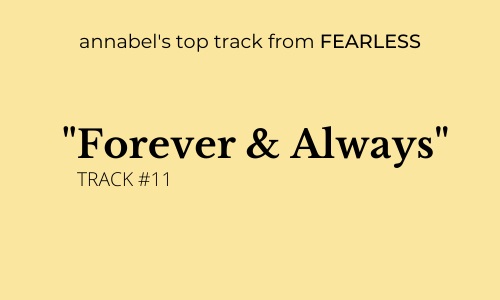
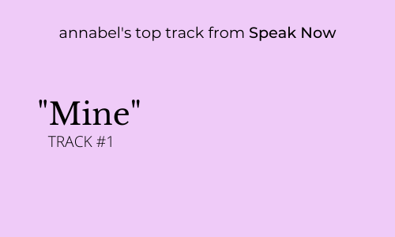
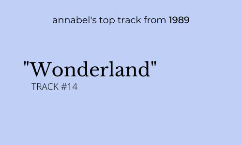
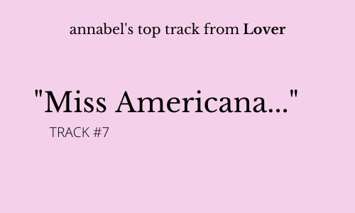
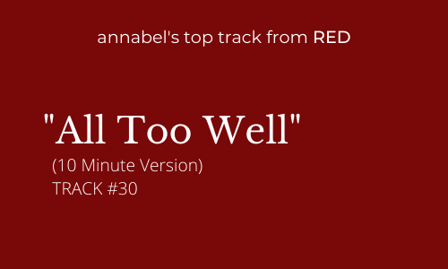
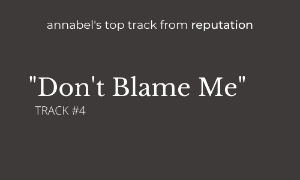
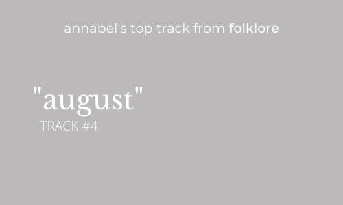
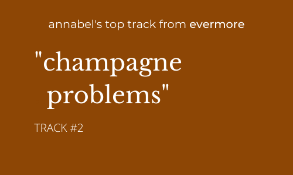

×
design inspiration
Throughout the pandemic, one thing that stayed constant in my life was Taylor Swift music. I have been a huge Taylor Swift fan since I was young so I chose her music as a representation of my "home" in my design. The design of the first version is based on all of Taylor Swift's brighter and happier albums. The design of the second version is based on all of Taylor Swift's darker and sadder albums.







